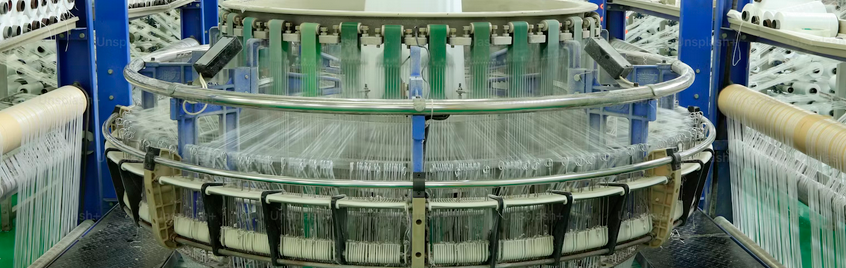

Introdução ao Problema
A Plastyk Ind., uma empresa consolidada no setor de manufatura de produtos plásticos, enfrenta o desafio de compreender de forma detalhada a performance financeira dos últimos anos. Diante de um mercado cada vez mais competitivo, a empresa busca identificar os principais fatores que impactam seu desempenho e quais estratégias podem ser adotadas para alavancar os resultados futuros.
Para isso, a Plastyk Ind. nos chamou para analisar os dados com o objetivo de realizar uma análise abrangente que forneça:
- Indicadores-chave de desempenho (KPIs): como receita, margem bruta, lucro líquido e evolução dos custos.
- Performance de vendas: identificação de tendências, sazonalidades e os principais produtos e mercados que impulsionam o crescimento.
- Análises preditivas: projeções para os próximos períodos com base nos dados históricos, para apoiar decisões estratégicas.
Com essas informações, a Plastyk Ind. espera obter insights valiosos para otimizar seus processos, melhorar a rentabilidade e reforçar sua posição no mercado. O sucesso dessa análise depende da utilização de ferramentas e técnicas avançadas de análise de dados, capazes de transformar os dados financeiros e de vendas em um guia estratégico para a tomada de decisões.
Demonstrativo Dashboard
A ideia aqui foi montar um dashboard mais dinamico, sem muitas páginas mas que mude os assuntos dinamicamente conforme os assuntos são trocados no canto superior. Na imagem podemos ver que Vendas estão selecionadas então os gráficos são todos adaptados utilizando os dados sobre as Vendas.
Foram deixados os Indicadores mais importantes no topo do dashboard e já informa esses valores de maneira limpa. Como a empresa quer entender a performance financeira nos últimos anos foram colocados todos os anos dísponiveis no dashboard.
Como primeiro gráfico, foi utilizado o gráfico de cascata, que acredito ser uma ótima escolha, pois fornece muitas informações sem ocupar muito espaço. Ele permite observar facilmente a tendência de crescimento ou redução dos dados apresentados. Nesse caso, utilizamos o gráfico para comparar as vendas acumuladas do ano com o acumulado do ano anterior. Além disso, podemos utilizar a função de* Drill Down*, que permite navegar pelos dados e identificar, como no exemplo a seguir, quais países foram mais responsáveis pelo crescimento das vendas em um mês específico.

Nesse caso, a Coreia do Sul foi a principal responsável por alavancar as vendas nos dois melhores meses da empresa: agosto e novembro.
Em contraste o gráfico Tree Map foi elaborado pensando em demonstrar os países que tem as piores performances com a empresa, e podemos também investigar clicando neles que o gráfico de Cascata nos fornecera mais informações detalhadas.
Identificamos que a Argentina apresenta os menores volumes de pedidos dos nossos materiais. Ao analisar mais detalhadamente, observamos que janeiro contribuiu significativamente para essa queda acentuada em comparação ao ano anterior. Foi identificado que o material PET deixou de ser adquirido no ano de 2021. Apesar de uma tentativa de recuperação entre os meses de março e junho, o restante do ano apresentou uma queda constante. Recomendamos que a empresa investigue as causas dessa variação negativa e busque fortalecer as relações com os clientes na Argentina.
A empresa fornece quatro tipos de plásticos. No gráfico a seguir, destacamos o desempenho de cada um. O Polietileno Tereftalato (PET) é o material mais adquirido, enquanto o Policloreto de Vinila (PVC) é o que gera maior lucro. Essa análise auxilia na compreensão da demanda de cada material e em quais a empresa deve concentrar seus esforços. Por fim, um ponto de atenção para a direção é avaliar se vale a pena continuar investindo na produção de Poliestireno Expandido (EPS).
Por fim, nesta página do dashboard, criamos um gráfico para localizar as contas de cada cliente em relação ao percentual de margem bruta, conforme a opção selecionada. No exemplo apresentado, podemos identificar os clientes que estão acima da média no percentual de margem bruta, mas abaixo da média em vendas. Esses são clientes estratégicos para a empresa direcionar esforços e tentar alavancar seus números.
Com o gráfico configurado dessa maneira, é possível aplicar zoom nas áreas mais relevantes, permitindo que as pessoas analisem detalhes específicos para tomar as decisões mais apropriadas para cada situação.
Análises Preditivas
Na página seguinte, foram realizadas três análises com projeções para auxiliar a empresa na elaboração do planejamento para o início de 2022.
O primeiro gráfico apresenta o cálculo da projeção linear para a receita do mês seguinte. A empresa encerrou dezembro de 2021 com uma receita de 18 milhões e 404 mil. De acordo com as projeções, espera-se que janeiro de 2022 registre uma receita de 19 milhões e 329 mil.
A próxima análise foi realizada utilizando inteligência artificial, mais especificamente o modelo de previsão Exponential Smoothing (ESM). O objetivo é fornecer à empresa uma estimativa da quantidade total de pedidos para o primeiro trimestre do ano, auxiliando na avaliação da compra de matéria-prima necessária para a produção dos materiais.
Por fim, apresentamos uma tabela de sensibilidade que analisa a variação do custo de produção em relação à receita. Essa tabela mostra como um aumento ou diminuição nos custos dos produtos pode impactar o percentual de margem bruta, bem como o efeito de uma variação na receita sobre esse mesmo indicador.